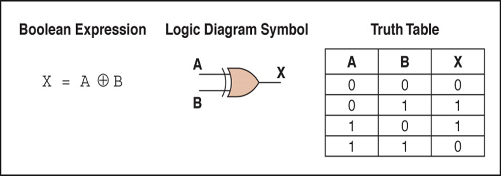
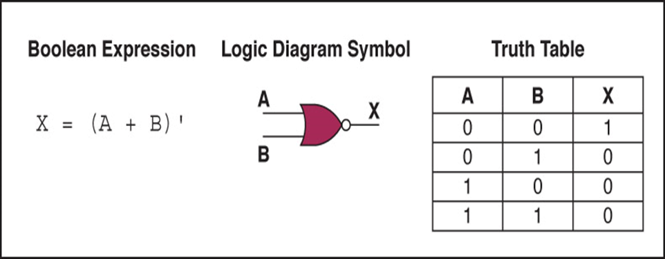
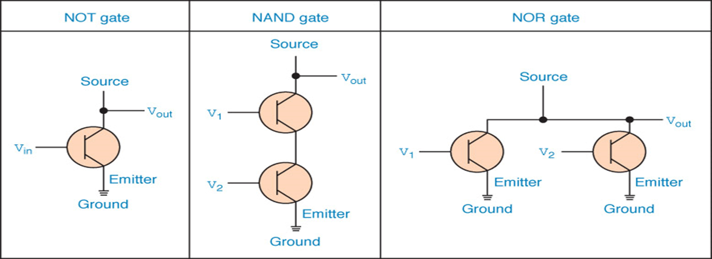
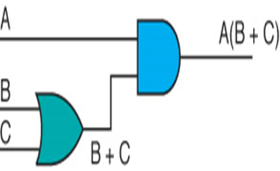
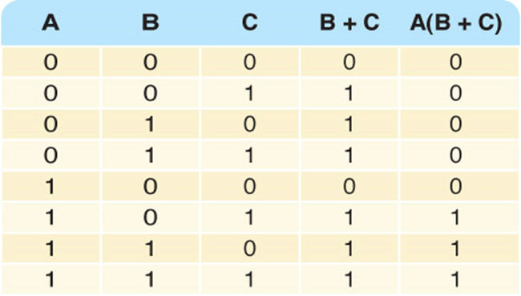
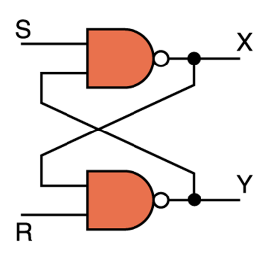
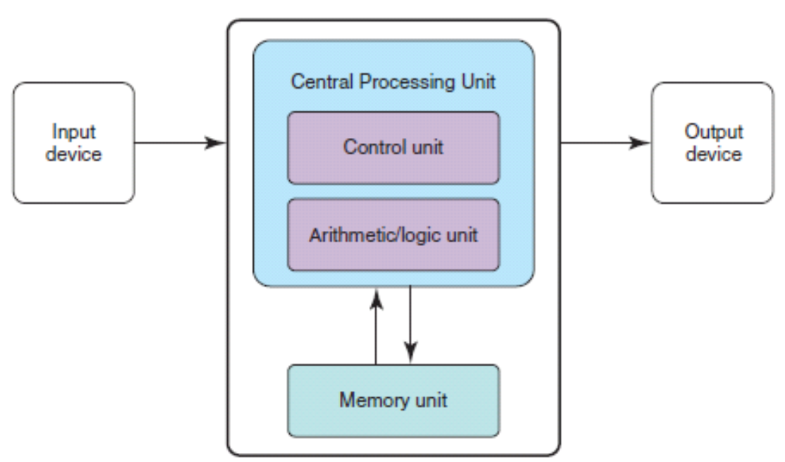

Chapter 1（概念）
Computer system: Computer hardware, software, data which interact to solve the problem.
Hardware: The physical elements of a computing system (printer, circuit boards, wires, keyboard…)【物理】
Software: The programs that provide the instructions for a computer to execute.【指令集合】
Abstraction(抽象): A mental model that removes complex details.【心理模型】
Chapter 2（概念、进制转换）
Integers(整数): A natural number, a negative of a natural number, zero
Rational Numbers(有理数): An integer or the quotient(商) of two integers.
Base(基数): It determines the number of digits and the value of digit positions(使用的数字量和数位位置的值).
Positional notation(位置记数法):(数字连续排列的表示系统，每个位置都有位值，数字为每个数字乘以位值的乘积之和)
进制转换：Binary(二进制) Decimal(十进制) Octal(八进制) Hexadecimal(十六进制)
In base n = n进制(以n为基数)（XX 进制 places)[保留小数点后几位]
十进制转二进制小数：0.XXX（X=0,1),小数×2，有一提出一，无一0补位。
Chapter 3（概念、补码、数据压缩）
多媒体压缩及压缩算法：
Compression ratio(压缩比): (压缩数据的大小除以原始数据的大小).
Complement(补码): Ten’s complement(十进制补码) Two’s complement(二进制补码)
e.g.1-49表示1~49 50-99表示-50~-1 0表示0
e.g.01111111表示127
10000000表示-128
补码->十进位：即首数为0直接算，首数为1后调换再-1.
Overflow(溢出): 如八位二进制补码若要表示128则溢出,需扩充一位或只表示正数
Scientific notation(科学计数法): e.g.0.12000 -> 12000E-5
ASCII: 0->48 A->65 a->97
Text compression:
e.g. Original text
bbbbbbbbjjjkllqqqqqq+++++
Encoded text
*b8jjjkll*q6*+5
长度为1、2、3的不必压缩,*字符数字空格都算空间。
原字母一般都为8字节，将对应字母编码
Color(RGB)-Red, Green, Blue
Hi-color:16bits-3bytes
True-color:24bits-3bytes
Chapter 4（概念、门电路及其表达式）
Gate
Circuits(电路)
Tools to describe:
（与离散数学不一样的是：与是AND点乘 ； ‘是NOT否 ； 或是OR+ ; XOR是非兼容或非/兼容或非 ；NAND是与或）
Types of gate:


Transistor(晶体管): 半导体材料制成、可做导线可做电阻、相当于开关

Combinational Circuits(组合电路): 即类似于分配律等将电路布尔表达式和真值表写出


注：AND门的乘号可省略
Half-adder(半加法器):产生两位之和并产生正确进位（2输入位，2输出位sum=A非兼容非或B；carry=A且B）
Full-adder(全加法器):在半加法器的基础上考虑进位输入的电路，即较半加法器多一项Carry-in。（3输入位，2输出位）
Circuits as memory(存储器电路)-Sequential circuits(时序电路)-输出也用作输入
S-R latch(S-R锁存器)

工作原理:X和Y始终相互补充，X被认作电路状态值，X为1电路存储1，为0存储0
CPU：最重要的集成电路
第一代（SSI）：1950～1960少于10个晶体管
第二代（MSI）：1960～1970几十到几百个晶体管
第三代（LSI）：1970成千上万晶体管，可以集成更多组件
第四代（VLSI）：1980以后：可以集成上亿的晶体管，尺寸不断缩小
Chapter 5（概念）
The von Neumann architecture(冯诺依曼结构)

Memory unit(内存单元):存放数据指令
logic unit(算术逻辑单元):对数据执行算术和逻辑运算、register（寄存器）
Control unit(控制单元):担当舞台监督、确保其它部件参与
指令寄存器(IR) 程序计数器(PC) 中央处理器(CPU)
Input device(输入设备):将数据从外部转移到计算机中
Output device(输出设备):将数据结果从计算机中转移到外部
RAM(随机存取存储器)-内容可更改，易失性
ROM(只读存储器)-内容不可更改，稳定
辅助存储设备：磁带、磁盘、CD、DVD、触摸屏
并行体系结构：
同步计算环境、流水线模式、共享内存……
Chapter 6 （概念）
Computer【功能】可编程、可存储、检索、处理数据
Machine language(机器语言):由硬件中直接使用的二进制编码指令组成
Assembly language(汇编语言):用助记码表示特定的机器语言指令
Pseudocode(伪码):表示算法的速记性语言（无语法规则、不区分大小写）
测试程序的两种方法：
Chapter 7（伪码的具体使用）
Sorted array(排序数组)
Set Position to 0
Set found to FALSE
WHILE (position < length AND NOT found )
IF (numbers [position] equals searchitem)
Set Found to TRUE
ELSE
Set position to position + 1
Set sum to 0
Set allPositive to true
WHILE (allPositive)
Read number
IF (number > 0)
Set sum to sum + number
ELSE
Set allPositive to false
Write "Sum is " + sum
Set first to 0
Set last to length-1
Set found to FALSE
WHILE (first <= last AND NOT found)
Set middle to (first + last)/ 2
IF (item equals data[middle]))
Set found to TRUE
ELSE
IF (item < data[middle])
Set last to middle – 1
ELSE
Set first to middle + 1
RETURN found
Set firstUnsorted to 0
WHILE (not sorted yet)
Find smallest unsorted item
Swap firstUnsorted item with the smallest
Set firstUnsorted to firstUnsorted + 1
Not sorted yet
current < length – 1
Find smallest unsorted item
Set indexOfSmallest to firstUnsorted
Set index to firstUnsorted + 1
WHILE (index <= length – 1)
IF (data[index] < data[indexOfSmallest])
Set indexOfSmallest to index
Set index to index + 1
Set index to indexOfSmallest
Swap firstUnsorted with smallest
Set tempItem to data[firstUnsorted]
Set data[firstUnsorted] to data[indexOfSmallest]
Set data[indexOfSmallest] to tempItem
Set firstUnsorted to 0
Set index to firstUnsorted + 1
Set swap to TRUE
WHILE (index < length AND swap)
Set swap to FALSE
“Bubble up” the smallest item in unsorted part
Set firstUnsorted to firstUnsorted + 1
Bubble up
Set index to length – 1
WHILE (index > firstUnsorted + 1)
IF (data[index] < data[index – 1])
Swap data[index] and data[index – 1]
Set swap to TRUE
Set index to index – 1
一些语句:WHILE 循环、Set to 定义赋值、IF ELSE 条件语句、Read 读取输入
Write 输出 、AND=&&、 OR=||、 NOT=！